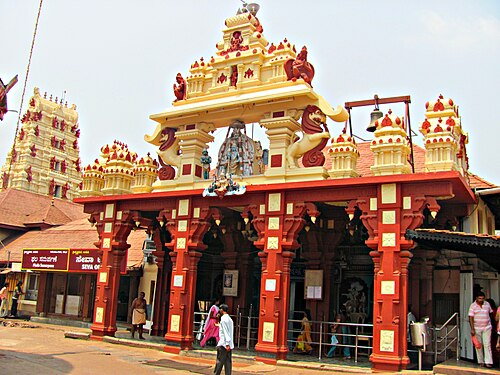
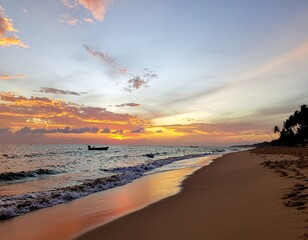

About Udupi
Udupi is a coastal city in Karnataka famous for Sri Krishna Mutt and Malpe Beach.
Tourist Attractions

Krishna Mutt Temple
Historic temple established by Sri Madhvacharya and a major pilgrimage destination.

Malpe Beach
Popular coastal destination known for water sports and sunset views.